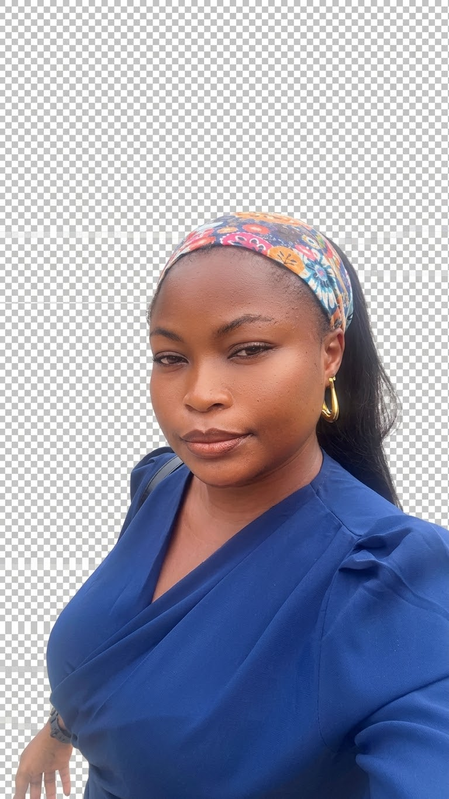

Technology
Exploring digital tools, computer systems and new ideas.
CYBERSECURITY STUDENT · MIVA OPEN UNIVERSITY
I am a 100-level Cybersecurity student, building my knowledge of technology, programming and digital security one step at a time.

Curious mind. Growing in tech.
MY DIRECTION
My goal is to develop practical skills and grow towards a career in cybersecurity. I am especially interested in how technology, networks and information systems work together.
Exploring digital tools, computer systems and new ideas.
Practising new skills and strengthening my technical foundation.
Working towards knowledge in networks, cloud and digital forensics.
A LITTLE ABOUT ME
I enjoy technology, travelling, movies and learning new skills. This website brings together my student profile, learning projects and academic planning tools.
Read my story →